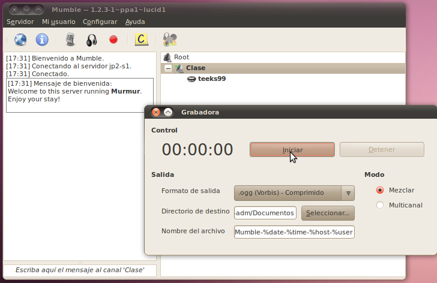

Live Audio (and Video)
The other way that audio shows are distributed online, other than in
podcast form, is live streams. Live streams are where the audio
is broadcast to listeners at the same time as it happens. When
the show host says something, everyone listening to it hears it at the
same time. This makes shows where listeners interact with the
show possible. Since this is only an introduction to multimedia,
we're not going to do any examples on this topic, we're just going to
go through some of the basics here. In addition, the concepts
behind live video are very similar to live audio (except it takes A LOT
more bandwidth) so we'll throw that in here as well, even though we
haven't covered the section on video yet.
Live Streams
The first thing you need when setting up a live audio/video show is a
way to transmit your show out to the user. There are many
different formats that support this, for each of these formats there are companies
that will give (usually with ads) or sell usage of their servers allowing you to broadcast in this format.
Here are some of the most popular options:
Shoutcast/Icecast - This is the
most popular audio streaming (Icecast can support video, but usually
does not), there are literally thousands of audio streams from
individuals as well as organizations such as radio stations that use
this. The format (also called shoutcast) was originally developed
by the company Nullsoft (now owned by AOL) who popularized it with
their shoutcast server (http://shoutcast.com). Icecast (http://icecast.org)
was created as a full-featured, open source replacement for the
shoutcast software, which is easy to setup and free to use. Now
Icecast and Shoutcast are used in about even numbers. Icecast is
the recommended solution if you only want to stream audio.
Real Time Messaging Protocol (RTMP) / Flash Streaming
- Currently Flash audio/video streaming is very popular on the
internet. The biggest reason that it has become so popular is
that almost all web browsers have the flash player built into them, so
no additional software was needed to start watching the streams.
There are several services that provide this for free the most popular
of which are Ustream (http://ustream.tv) and Justin.tv (http://justin.tv).
These allow you to connect a microphone/camera or complete audio/video
feed to their streaming application and broadcast, for free with ads on
the internet, without having to setup any hardware or software
yourself. For a begenning experiment with streaming on the web,
this is a quick and easy way to get started. There are also more
professional products that allow for streaming of RTMP which allow you
to run your own server. Adobe, being the maker of the Flash
software and RTMP protocol has the most popular server, in its Adobe
Flash Streaming server. However, there is an open source
competitor that is completely free to use and easy to setup called Red5
(http://red5.org).
Windows Media Server
- This is the server software that is used to stream Windows Media
audio and video to Windows Media Player clients. Unfortunately
this really only works well if all the users have Microsoft Windows, as
it isn't directly supported on Mac or Linux.
Helix/Real Media - Real Media
was the number one streaming media solution before any of the other
solutions on this list, however it has fallen behind the other
options. Today it is used mostly in corporate settings.
Quicktime / Darwin Media Server (Apple QuickTime)
- Both these options are products of Apple, built to work with the
QuickTime media player. However, the Darwin Media Server has been
released as open source, and is freely available. In addition to
working with QuickTime video, it can work with some of the bigger
Audio/Video standards (H.264, MPEG-4 Part 2, 3gp).
Talking to Guests
So now you have the audio and video from your show being pumped out
over the internet, however it is still just you and whoever is sitting
with you where you are recording. Wouldn't it be nice if you
could have guests or even other hosts join you on the show, live from
all around the world? Thanks to the great ability of computers to
send audio and video to each other that is possible! (This is
also all possible even if you aren't doing a live stream, you can still
use all this for recording a non-live podcast/videocast.)
The most basic way to have someone join in is to use one of several
Voice over IP (VoIP) options. Voice over IP is basically a
computer-based replacement for phone calls. Instead of sending
your voice
as a voltage over a copper wire to your telephone company, the computer
sends your voice as a stream of bits to the recipient over the
internet. The most popular version of VoIP that can be use for
making audio (or video) shows is Skype. Skype allows you to join
one or more people into a call. From there you can record the
output of the call onto your computer or send it directly out on your
stream. Unfortunately skype has some limitations that keep
it from interacting with other software besides the official skype
client. If you want an option that allows you to have the freedom
to use many different types of VoIP software, there is a standard that
most of the other ones (besides Skype) follow. That is called
Sesssion Initiation Protocol (SIP). SIP is a very full-featured
protocol that has all sorts of great features like call-forwarding and
voicemail built into it. The Empathy (Instant Messaging) client
that comes with Ubuntu can have the telepathy-sofiasip plugin installed
to be a very good SIP client. Also in Empathy is the ability to
use Video/Voice chat across GoogleTalk/Jabber servers. This is a
good alternative to skype as well.
The Skype/SIP/Instant Messenger have some support for multiple
users talking to each other, but it is not their specialty, and they
are generally limited to only a few users at a time. Sometimes
you might want to have a large group of people in the show where anyone
(or limited groups thereof) can talk to each other. Mumble is a
group voice chat application that was designed for use by groups of
people playing computer games, but will work very well for any kind of
group chat. To get this setup, you need to install the
mumble-server (called murmur) somewhere on the network that all the
users can get to, then have each user run the mumble client
application. It is possible to create multiple channels on the
server, so you can have multiple different groups chatting.

There isn't anything similar that works with large group conversations
over video. This is because it is easy to hear multiple different
people at the same time (or at least close to the same time), but you
can't easily watch several different video displays at once. The
closest application that allows for this is Big Blue Button (http://bigbluebutton.org).
Big Blue Button was built for use in virtual classrooms, where all the
students have a web-cam (or at least microphone) and there is a teacher
that can control who is talking at any given time. This same
setup can work well for a show, the host (or possibly a technician)
would replace the teacher as the one who controls what video stream is
being sent out to everyone, and the students would be replaced with
guests on the show. This uses flash streaming video for the
client that each user needs, so it is very easy for everyone to setup.
Tying it all together with JACK
So now that you have a bunch of different streams of audio coming into
your computer, and a stream to send it out on, you need a way to link
up that input with the output. JACK is a set of software that
allows you to do just that. The easiest way to think of JACK is
as a set of virtual patch cables, where you can take the audio output
of one program and feed it to a different program. Then you can
take that output and feed it to a third program. JACK is somewhat
complicated to setup, and a bit beyond the scope of things here, but it
is an amazing resource if you need something to tie all your audio
together.
Interacting with the Audience
Now that you have the media for your live stream all setup, the only
other thing to think about is the other stuff that is supporting
it. Generally it is important to have a web page that has
information about your stream, such as what is on right now, and what
the future schedule is.
Another part that is nice to have is a way to use text for the
audience to talk to the hosts and guests, as well as each other.
This is generally done by creating an Internet Relay Chant (IRC) chat
room. (http://en.wikipedia.org/wiki/Internet_Relay_Chat
http://es.wikipedia.org/wiki/Internet_Relay_Chat) This could be on an
IRC server that is specific to the show
(with the option to have more than one chat room) or on another public
IRC server, where there is a room specifically set aside for this
show. Since not all users have an IRC client on their computer,
it is highly recommended that you make one available embedded in the
website as well. There are several out there that allow users to
login to the IRC chat by just going to a web-page, without having to
download anything to their computer.
The other option for interacting with the audience is to use Twitter
(or the open-source alternative Identica). On these sites you
could tell users to use a specific hashtag (#CoolShow) in their posts,
this way anyone can quickly see all the comments going back and fourth
about the show.
Either IRC or Twitter/Identica is a great way to interact with the
audience. A common way to do this is to ask a question on the
live stream, and then request that the audience write their responses
back. Another method is to tell the audience to post questions
they have for a guest using one of these methods, then the host can
read the question aloud to the guest.
That should be enough good tips to get you started on your live stream... good luck!